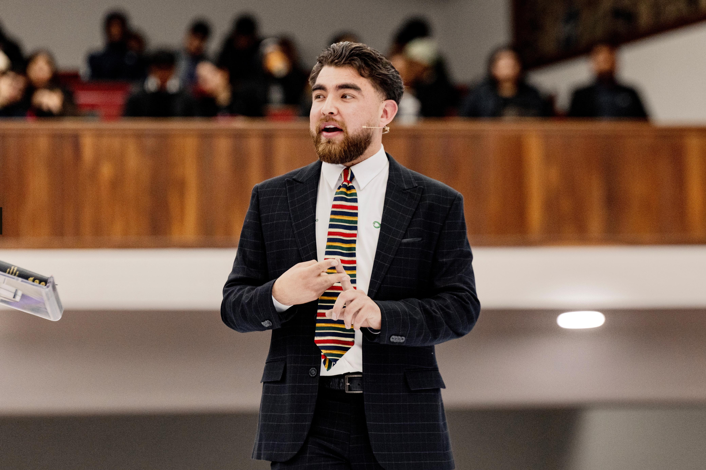
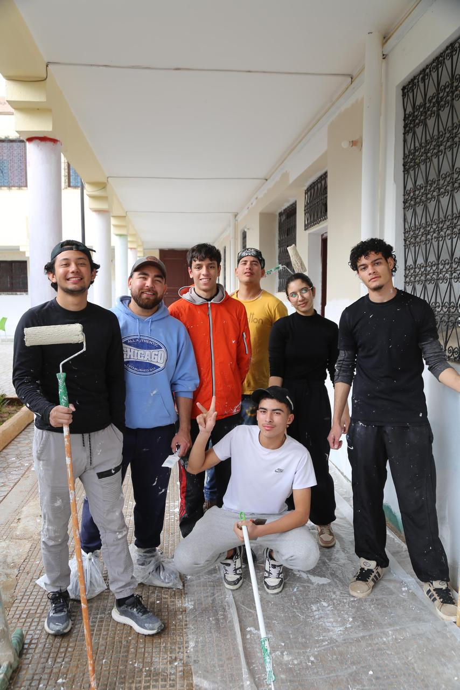

Una síntesis de mi formación académica, experiencia profesional, misión internacional, certificaciones y aspiraciones. Un perfil construido con propósito y orientado al servicio.
Escuela de Música · Universidad de Montemorelos, N.L., México
Graduando 2026Universidad de Montemorelos · Montemorelos, México
Obregón, Sonora · Proyecto de residencia comunitaria
Montemorelos, Nuevo León, México
Solfeo, teoría musical, dirección coral y banda escolar · Preescolar a Preparatoria
Residencia pedagógicaUniversidad de Montemorelos · Montemorelos, México
Más de 30 estudiantes en diferentes niveles y contextos
En curso
Idiomas
El compromiso con la formación continua no es solo un principio, es una práctica constante demostrada en cada certificación obtenida.
Universidad de Montemorelos · Escuela de Música
2026Seventh-day Adventist Texas Conference · EUA
2025Formación especializada en música y primera infancia
2025Metodologías para la enseñanza musical inicial
2026Trinidad & Tobago · Egipto · Marruecos
2022–20256 programas adicionales de alcance con impacto verificable
2022–2025La experiencia misional ha ampliado mi cosmovisión, sensibilidad intercultural y convicción de que la música y el servicio son inseparables.

Entrenamiento en cosmovisión islámica y preparación para el diálogo intercultural. Servicio comunitario y evangelismo relacional.
Cosmovisión islámicaProyecto de servicio en la Nile Union Academy. Apoyo educativo y musical en contexto adventista en el norte de África.
Nile Union AcademyAlcance médico comunitario y compromiso evangélico relacional en un contexto de mayoría musulmana.
Alcance médicoMiembro activo del equipo de liderazgo. Alcance rural semanal con apoyo médico, educativo y espiritual a comunidades vulnerables en México y el sur de los Estados Unidos.
Líder de programas de literatura — Texas Conference (EUA)
6 programas como líder · Evangelismo a través de la distribución de literatura
adventista en comunidades anglófonas e hispanohablantes.
Documento completo con toda mi formación, experiencia, certificaciones y referencias profesionales en formato listo para presentar a empleadores, instituciones educativas o comunidades de servicio.
🛠️ Herramientas y tecnologías
Personas que han acompañado mi formación y pueden dar testimonio de mi desempeño profesional, ético y humano.
Estoy abierto a oportunidades de docencia, dirección coral, proyectos musicales e intervención comunitaria.
Última sección
Galería